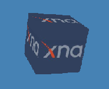

Creating a Custom Vertex Declaration
Demonstrates how to create a custom vertex declaration and use it to render a 3D object.

Game Studio includes a few predefined classes for common vertex buffer declarations such as VertexPositionColor and VertexPositionColorTexture. If you need to create a vertex buffer declaration that includes additional user-defined types, create a custom vertex declaration.
A custom vertex declaration is a class that implements fully customizable per-vertex data. Furthermore, if you derive the class from IVertexType, you will not need to create a vertex declaration when creating your vertex buffer or drawing the geometry.
To create a custom vertex declaration
Declare a structure that derives from IVertexType.
public struct CustomVertex1 : IVertexTypeAdd members to the struct that describe the per-vertex data.
This example uses position as a Vector3 Structure type, a texture coordinate using a Vector2 Structure type, and a vertex declaration using the VertexDeclaration type.
Vector3 vertexPosition; Vector2 vertexTextureCoordinate; public readonly static VertexDeclaration VertexDeclaration = new VertexDeclaration ( new VertexElement(0, VertexElementFormat.Vector3, VertexElementUsage.Position, 0), new VertexElement(12, VertexElementFormat.Vector2, VertexElementUsage.TextureCoordinate, 0) );Implement a constructor and public accessor methods.
//The constructor for the custom vertex. This allows similar //initialization of custom vertex arrays as compared to arrays of a //standard vertex type, such as VertexPositionColor. public CustomVertex1(Vector3 pos, Vector2 textureCoordinate) { vertexPosition = pos; vertexTextureCoordinate = textureCoordinate; } //Public methods for accessing the components of the custom vertex. public Vector3 Position { get { return vertexPosition; } set { vertexPosition = value; } } public Vector2 TextureCoordinate { get { return vertexTextureCoordinate; } set { vertexTextureCoordinate = value; } }Implement a non-public method for accessing the vertex declaration.
VertexDeclaration IVertexType.VertexDeclaration { get { return VertexDeclaration; } }Create a built-in effect to render the object with a texture using the BasicEffect class as demonstrated in Creating a Basic Effect.
Create the vertex buffer passing in the typeof(CustomVertex1) instead of a vertex declaration to describe the vertex buffer data.
vertexBuffer = new VertexBuffer( graphics.GraphicsDevice, typeof(CustomVertex1), number_of_vertices, BufferUsage.None );Create the per-vertex data; this shows a portion of the code.
Vector3 LeftTopFront = new Vector3(-1.0f, 1.0f, 1.0f); Vector3 LeftBottomFront = new Vector3(-1.0f, -1.0f, 1.0f); Vector3 LeftTopBack = new Vector3(-1.0f, 1.0f, -1.0f); Vector3 LeftBottomBack = new Vector3(-1.0f, -1.0f, -1.0f); Vector3 RightTopFront = new Vector3(1.0f, 1.0f, 1.0f); Vector3 RightBottomFront = new Vector3(1.0f, -1.0f, 1.0f); Vector3 RightTopBack = new Vector3(1.0f, 1.0f, -1.0f); Vector3 RightBottomBack = new Vector3(1.0f, -1.0f, -1.0f); Vector2 textureLeftTop = new Vector2(0.0f, 0.0f); Vector2 textureLeftBottom = new Vector2(0.0f, 1.0f); Vector2 textureRightTop = new Vector2(1.0f, 0.0f); Vector2 textureRightBottom = new Vector2(1.0f, 1.0f); // Front face. cubeVertices[0] = new CustomVertex1(LeftTopFront, textureLeftTop); cubeVertices[1] = new CustomVertex1(LeftBottomFront, textureLeftBottom); cubeVertices[2] = new CustomVertex1(RightTopFront, textureRightTop); cubeVertices[3] = new CustomVertex1(LeftBottomFront, textureLeftBottom); cubeVertices[4] = new CustomVertex1(RightBottomFront, textureRightBottom); cubeVertices[5] = new CustomVertex1(RightTopFront, textureRightTop);For a triangle list, you need three vertices for a triangle and two triangles to make the front face of a cube.
Set the data into the vertex buffer data by calling VertexBuffer.SetData and set the vertex buffer to the device by calling GraphicsDevice.SetVertexBuffer.
vertexBuffer.SetData<CustomVertex1>(cubeVertices); graphics.GraphicsDevice.SetVertexBuffer(vertexBuffer);Draw the object by calling GraphicsDevice.DrawPrimitives.
RasterizerState rasterizerState1 = new RasterizerState(); rasterizerState1.CullMode = CullMode.None; graphics.GraphicsDevice.RasterizerState = rasterizerState1; foreach (EffectPass pass in basicEffect.CurrentTechnique.Passes) { pass.Apply(); graphics.GraphicsDevice.DrawPrimitives( PrimitiveType.TriangleList, 0, // start vertex 12 // number of primitives to draw ); }
© 2012 Microsoft Corporation. All rights reserved.
© 2023 The MonoGame Foundation.